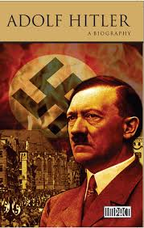

|  | n August 1914, at the outbreak of World War I, Hitler was living in Munich and voluntarily enlisted in the Bavarian Army.[64] According to a 1924 report by the Bavarian authorities, allowing Hitler to serve was almost certainly an administrative error, since as an Austrian citizen, he should have been returned to Austria.[64] Posted to the Bavarian Reserve Infantry Regiment 16 (1st Company of the List Regiment),[65][64] he served as a dispatch runner on the Western Front in France and Belgium,[66] spending nearly half his time at the regimental headquarters in Fournes-en-Weppes, well behind the front lines.[67][68] He was present at the First Battle of Ypres, the Battle of the Somme, the Battle of Arras, and the Battle of Passchendaele, and was wounded at the Somme.[69] He was decorated for bravery, receiving the Iron Cross, Second Class, in 1914.[69] On a recommendation by Lieutenant Hugo Gutmann, Hitler's Jewish superior, he received the Iron Cross, First Class on 4 August 1918, a decoration rarely awarded to one of Hitler's Gefreiter rank.[70][71] He received the Black Wound Badge on 18 May 1918.[72] During his service at headquarters, Hitler pursued his artwork, drawing cartoons and instructions for an army newspaper. During the Battle of the Somme in October 1916, he was wounded in the left thigh when a shell exploded in the dispatch runners' dugout.[73] Hitler spent almost two months in hospital at Beelitz, returning to his regiment on 5 March 1917.[74] On 15 October 1918, he was temporarily blinded in a mustard gas attack and was hospitalised in Pasewalk.[75] While there, Hitler learned of Germany's defeat, and—by his own account—upon receiving this news, he suffered a second bout of blindness.[76] Hitler described the war as "the greatest of all experiences", and was praised by his commanding officers for his bravery.[77] His wartime experience reinforced his German patriotism and he was shocked by Germany's capitulation in November 1918.[78] His bitterness over the collapse of the war effort began to shape his ideology.[79] Like other German nationalists, he believed the Dolchstoßlegende (stab-in-the-back myth), which claimed that the German army, "undefeated in the field", had been "stabbed in the back" on the home front by civilian leaders, Jews, Marxists, and those who signed the armistice that ended the fighting—later dubbed the "November criminals".[80] The Treaty of Versailles stipulated that Germany must relinquish several of its territories and demilitarise the Rhineland. The treaty imposed economic sanctions and levied heavy reparations on the country. Many Germans saw the treaty as an unjust humiliation—they especially objected to Article 231, which they interpreted as declaring Germany responsible for the war.[81] The Versailles Treaty and the economic, social, and political conditions in Germany after the war were later exploited by Hitler for political gain. |
Adolf Hitler, byname Der Führer (German: “The Leader”), (born April 20, 1889, Braunau am Inn, Austria—died April 30, 1945, Berlin, Germany), leader of the Nazi Party (from 1920/21) and chancellor (Kanzler) and Führer of Germany (1933–45). He was chancellor from January 30, 1933, and, after President Paul von Hindenburg’s death, assumed the twin titles of Führer and chancellor (August 2, 1934).
dolf Hitler was born on 20 April 1889 in Braunau am Inn, a town in Austria-Hungary (in present-day Austria), close to the border with the German Empire.[14] He was the fourth of six children born to Alois Hitler and his third wife, Klara Pölzl. Three of Hitler's siblings—Gustav, Ida, and Otto—died in infancy.[15] Also living in the household were Alois's children from his second marriage: Alois Jr. (born 1882) and Angela (born 1883).[16] When Hitler was three, the family moved to Passau, Germany.[17] There he acquired the distinctive lower Bavarian dialect, rather than Austrian German, which marked his speech throughout his life.[18][19][20] The family returned to Austria and settled in Leonding in 1894, and in June 1895 Alois retired to Hafeld, near Lambach, where he farmed and kept bees. Hitler attended Volksschule (a state-owned primary school) in nearby Fischlham.[21][22] The move to Hafeld coincided with the onset of intense father-son conflicts caused by Hitler's refusal to conform to the strict discipline of his school.[23] His father beat him, although his mother tried to protect him.[24] Alois Hitler's farming efforts at Hafeld ended in failure, and in 1897 the family moved to Lambach. The eight-year-old Hitler took singing lessons, sang in the church choir, and even considered becoming a priest.[25] In 1898 the family returned permanently to Leonding. Hitler was deeply affected by the death of his younger brother Edmund, who died in 1900 from measles. Hitler changed from a confident, outgoing, conscientious student to a morose, detached boy who constantly fought with his father and teachers.[26]
| Citizenship | Political party |
|---|---|
| Preceded by Paul von Hindenburg (President) | Succeeded by Karl Dönitz (President) |
| Preceded by | Paul von Hindenburg (President) |